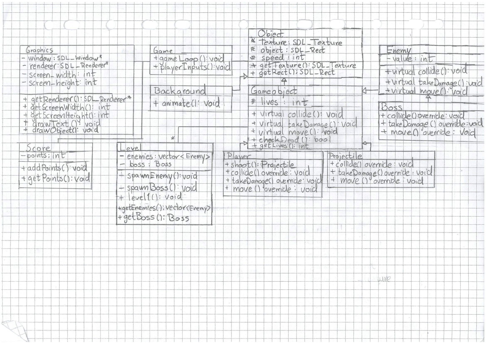

Above you can see The Grand Tree, a 3D game made in Godot using GDScript. Platformer where the
main game mechanic was a gun that could shoot bouncy teleportation spheres and you had to make your way up an enormous tree.
You could shoot the spheres at different speeds and only when you press again do you teleport, making the main gameplay loop stem from
teleporting with correct timing. Uses the default Godot assets which makes me not exactly proud of its appearance,
I was more excited about making the mechanics.
Space Shooter was a very basic 2D side-scrolling shooter built in C++ using SDL2.0 for rendering the graphics.
The project that introduced to me the idea of representing whole game levels in .txt files and then parse them in order to build game objects
like obstacles and enemies. Resulted in level designing being as easy as editing a .txt file.
This was made for a object-oriented programming course in university together with 3 other people ages ago and digging up these ancient files I got a good laugh discovering
that I drew the entire project's first UML-diagram with a lead pencil in my worn-out notebook and used my phone to photograph it to my professor.
The Signal level indicator showed on a screen the inserted sound's volume and balance.
This simple description might be deceptive, this was a huge and very low level component project together with 4 other university people who had vastly
different responsibilities and honestly makes me uncomfortable saying I was a part of certain parts of this project.
But, the entire project was built on a DE2 board and the built-in WM8731 sound chip receives an analog audio signal and creates a
16-bit digital sample that is sent to speakers and the field-programmable gate array(FPGA).
On this custom programmed FPGA plenty of our
VHDL code magically deciphers the sample's audio balance, volume and power.
Depending on these values the screen's graphics are manipulated(color and movement mostly) and an appropriate
image is chosen from a static random-access memory(SRAM) which is sent to a
VGA controller for display. Just imagine an image of a cat sleeping changing to a cat screaming when the bass drops.
What I spent the majority of my time on was to get more familiar than I'd like with VHDL to
figure out how to accurately measure and represent a 16-bit sound sample's decibel and power.